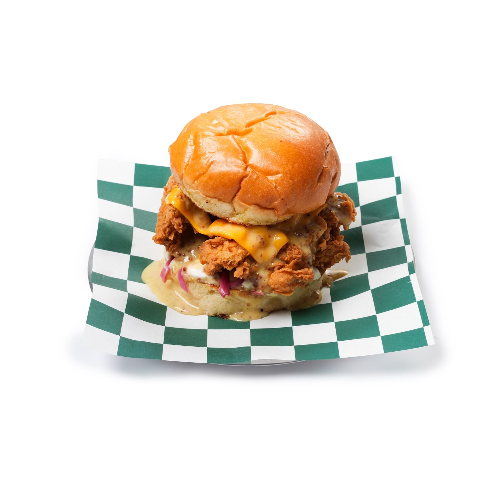
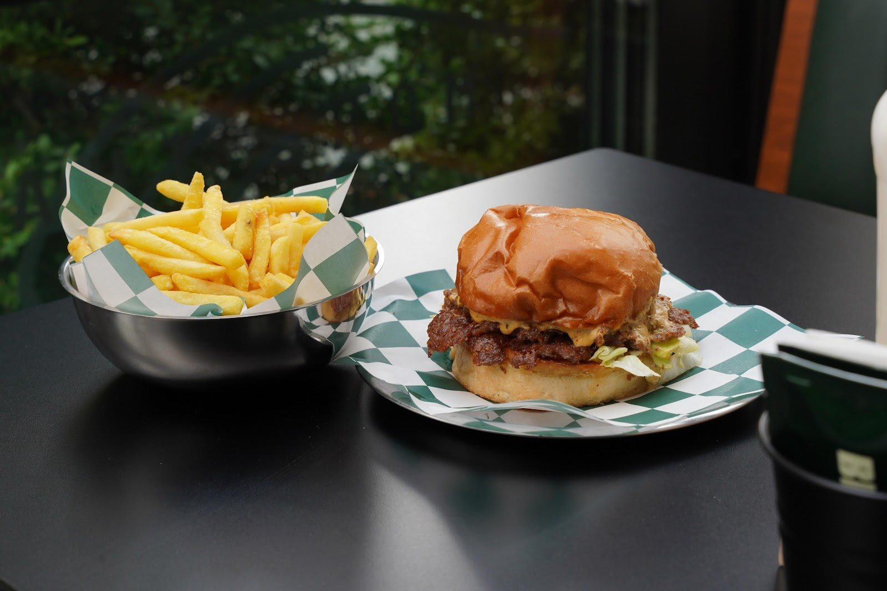
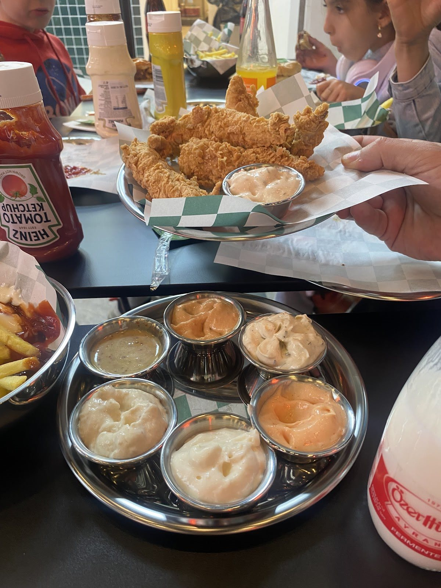

Google yorumu ★★★★★
“Mükemmel bir burger deneyimi için hiç düşünmeden gidebilirsiniz”Mehmet Y. Y.Yorumun tamamı
Kavaklı, Demir Country
İlk ısırık için iyi bir sebep.
Brogers’te buluşalım.


Burger, patates, biraz da sohbet.
Burgerinizi seçin. Yanına patatesi, sevdiğiniz sosları ve arkadaşlarınızı ekleyin. İyi bir mola bazen bu kadar kolay.
Yemeksepeti’nde menüyü görünPaylaşmak isterseniz.
Masaya gelen lezzetler, ortaya konan soslar. Burgerin yanındaki küçük detaylar da molanın bir parçası.
Menü hakkında bilgi alın
Demir Country’deyiz.
Yeşilyurt Caddesi’nde, günün koşturmacasına kısa bir ara. Arkadaşınızla buluşun ya da yol üstünde uğrayın.
Brogers’e yol tarifiGoogle yorumları
Google yorumu ★★★★★
“Mükemmel bir burger deneyimi için hiç düşünmeden gidebilirsiniz”Mehmet Y. Y.Yorumun tamamı
Google yorumu ★★★★★
“Tesadüfen girdiğimiz bir mekandı. Burgerleri efsane lezzetliydi. Sosları da aynı şekilde.”Orkun Ö.Yorumun tamamı
Google yorumu ★★★★★
“Yediğim en iyi hamburgerlerdendi. Brogers Mac efffsane”Ayşe K.Yorumun tamamı
Google yorumlarından kısa alıntılar. Puan ve yorum sayısı 2 Kasım 2026 tarihinde kontrol edilmiştir.
Güncel çalışma saatleri ve menüyle ilgili sorularınız için telefonla bilgi alabilirsiniz.